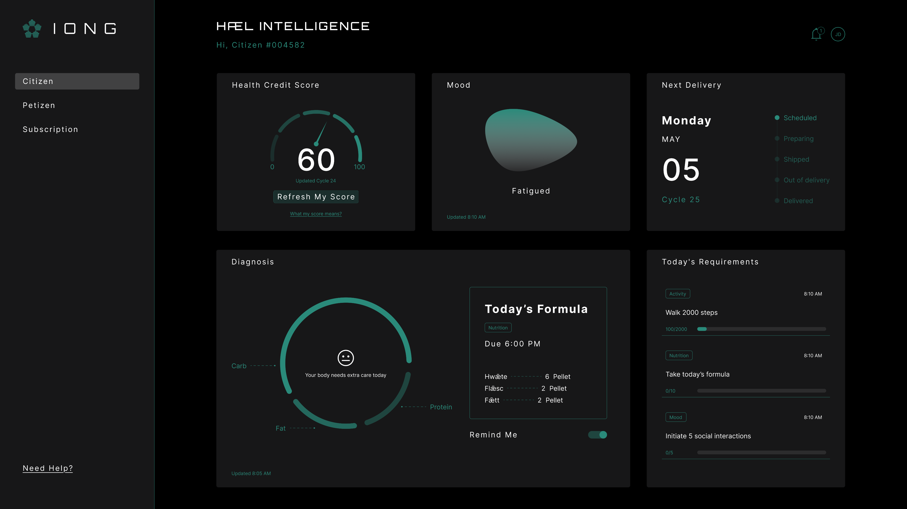
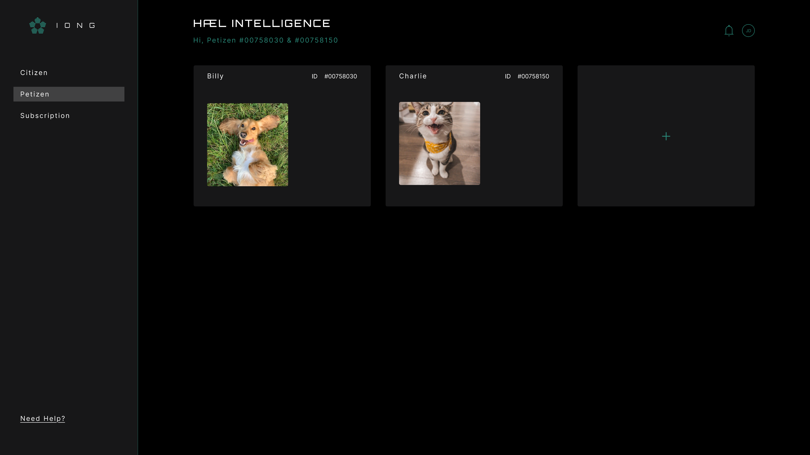

Dashboard
Real-Time Biometric Tracking
HÆL Intelligence shows each citizen's health in real time, including health score, mood, and delivery. It uses this data to create daily formulas and set personalized requirements.
Biometric data analysis
HÆL Intelligence shows each citizen's health in real time, including health score, mood, and delivery. It uses this data to create daily formulas and set personalized requirements.

Health Credit Score is based on daily behavior. Citizens can earn bonuses through programs like family participation, while missed tasks may reduce the score. The score also affects access to stores and services.
Pets are part of the family. Their health data is monitored and integrated into the system, allowing personalized nutrition and care. Petizen data also contributes to overall household health scoring.
